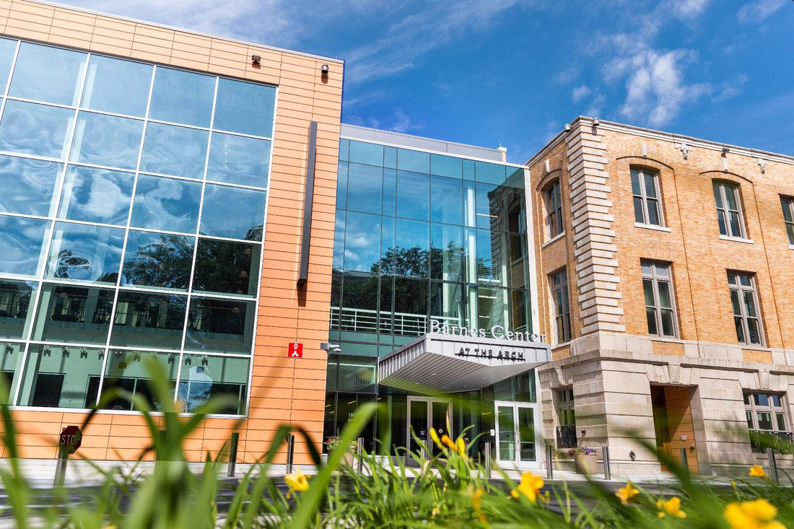

When the world shut down in response to COVID-19 in 2020, college and university students were one of the most affected populations. Students could no longer regularly attend classes, and in most cases were sent back home to endure fully remote learning. This caused a lack of interpersonal interactions and a complete loss of one’s social life during some of the most formative years of a person’s life.
Upon the return to campus following the height of the pandemic, many college students across the United States experienced severe mental and emotional effects. Depression and anxiety rates increased, along with suicide ideation and attempts. This called for schools to prioritize mental health resources, including therapy, student activities and outreach, and open communication about mental health on campuses.
Between 2007 and 2023, the number of college students surveyed who self-reported that they had attempted suicide increased by about 4,452%, according to an annual survey compiled by the Healthy Minds Network that gathers data from schools across the country. In 2007, about 30 students said they had attempted suicide, with the amount of self-reported respondents increasing to 1,341 people in 2023. This number peaked in 2021 during the height of the COVID-19 pandemic when most of the social restrictions were in place, with 1,832 students self-reporting attempting suicide.
While the jump in self-reported suicide attempts coincides with the pandemic, many other factors may have impacted these reports. Since 2007, the negative stigma around the topic of mental health has been decreasing due to more resources and understanding of the psychology behind mental illnesses. The stigma surrounding mental health has also benefited from COVID-19, since it increased people’s interactions with those struggling with mental illnesses, especially because more people endured negative experiences, loss, and isolation during this time. With a lower stigma, mental health is discussed more openly, leading to more people who might self-report mental health disorders or suicide ideation and attempts in surveys or to doctors, psychologists, and peers.
However, rising rates of self-reported suicide attempts also highlight the idea that students' mental health has been declining due to increasing stressors from the college environment itself. College is inherently stressful because it’s the basis of a student’s future success. Even if students are involved in plenty of extracurriculars with strong friendships and social opportunities, exams, competition for classes, internships, jobs, and class load inevitably cause stress.
According to an article from Inside Higher Ed, around 56% of students have experienced chronic stress, based on findings from a new Student Voice Survey of 3,000 college students at 158 institutions. In the article, Colleen Conley, associate professor of clinical psychology and director of the Improving Mental-health and Promoting Adjustment through Critical Transitions (IMPACT) lab at Loyola University Chicago explains, “students under stress may see subsyndromal symptoms, where “they’re experiencing some form of impairment.’” From a clinical perspective, even students who don’t fully meet criteria for a mental health disorder but constantly feel “stressed or distressed” benefit from mental health resources. However, data from the Student Voice Survey found that of students who reported experiencing chronic stress, 58% haven't accessed on-campus resources, including counseling, telecounseling, referral to a therapist, or urgent counseling.
While the pandemic had many negative effects, it brought significant awareness to mental health and the importance of resources for all communities as many people were struggling mentally and emotionally. Similarly, at colleges and universities mental health resources have been expanding over the past decade and were further prioritized during COVID-19.
Syracuse professor Shannon Sweeney has witnessed these changes firsthand. Sweeney teaches in the psychology department at Syracuse and has a background in clinical psychology. She received her undergraduate degree and Ph.D. from Syracuse, attending the school as a student from 2004-2008 and 2010-2016 and beginning teaching in 2017. According to Sweeney, Barnes Center at the Arch, a student health and wellness center, did not exist when she was an undergraduate. At the time, “There wasn't this huge… connection between your physical health and your mental health,” she said. That has since changed, with the Barnes Center now offering various forms of therapy, fitness and meditation classes, pet therapy, a 24-hour support hotline, and more.
As a professor, Sweeney has also noticed significant changes surrounding the conversation of mental health and wellness amongst students at Syracuse. She explains, “There's such a significant difference as faculty in my students' willingness to talk about mental health in the classroom, compared to when I was an undergrad myself. I feel like mental health was just so much more stigmatized.”
The data from the Healthy Minds Network supports the idea that mental health has become destigmatized in recent years. Almost 60% of people surveyed in 2007 said they were aware of mental health resources at their schools, which increased to over 75%, or 3 ⁄ 4, of participants in 2023. With available resources becoming more widespread, students are likely taking advantage of offerings at their schools more frequently, whether using the student gym or attending a therapy session.
When evaluating mental health at colleges and universities, racial differences arise in both quality of mental health and awareness of resources. Data shows that individuals from the Pacific Islands self-reported the highest rate of attempted suicide (4.45%) while white individuals had the lowest rate of self-reported suicide attempts (1.41%). Indigenous individuals self-reported the second highest rate of suicide attempts, at 3.8%. Further, Asian individuals self-reported being the most aware of resources (71.4%) and individuals from the Pacific Islands self-reported being the least aware of resources (66.34%).
Professor Sweeney believes that these rates are impacted by historical trauma amongst marginalized populations. She says, “When I was a grad student, I worked at a mental health clinic on the Onondaga Nation. I feel like every person that I was working with… had this trauma that has just gotten passed down for generations." To begin fixing this issue, the disconnect between people and mental health services needs to be addressed, which can begin by offering a more comprehensive range of mental health resources for all communities at colleges across the U.S.
The rise in self-reported suicide rates at U.S. colleges and universities underscore a critical need for heightened mental health awareness and resources at academic institutions. The aftermath of the COVID-19 pandemic has cast a spotlight on the profound emotional and psychological toll that the college experience can exact on students. While the negative stigma surrounding mental health is decreasing, the escalating rates of self-reported suicide attempts also point to systemic stressors within the college environment itself. To address this crisis effectively, colleges must prioritize mental health resources, foster open communication, and work diligently to bridge the gap between students of all backgrounds and the availability of essential mental health and wellness services.